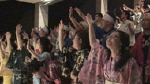
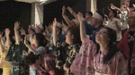

KANSAI AREA
Asian Center Osaka (Osaka Base)
Asian Center Osaka (Osaka Base)
 

At Asian Center Osaka, the youth of Japan and Korea join together to receive training and do ministry together. Our base brings together Japanese (who have the ability to show consideration of others) and Koreans (who boldly start new relationships). As we live together, we overcome cultural differences, gain a proper identity in Christ, receive and love each other and desire to grow in Christ as disciples to be used by God.
Our vision is that the youth of Japan will be challenged to rise up and share the Gospel throughout Japan by joining forces with Korean missionaries, who are committed to bringing reconciliation and sharing the Gospel with them. We also want to take the Gospel to Asian countries that have pain from war and also to be used by God in regards to the Muslim countries, by sharing the Gospel of forgiveness and reconciliation.
- Campus evangelization
- Osaka outskirts city evangelization
- DTS detailed information shown at website: www.ywamosaka.com/dts.html
* Recruiting 21th DTS students
- Outreach (Domestic, International Evangelization)
- Salvation ministry for the homeless (Osaka city parks)
1989 YWAM Korea missionary Kim Jung Hwan and 3 other missionaries come to Japan.
Begin evangelizing at Osaka Takatsuki city
1991 Move to Osaka and started Asian Center Osaka
1993 1st DTS begins
We are taking applications for our 23rd DTS!
Period: May 2, 2015 (Commencement) ~ October 2015
Address: 533-0031 Osaka-shi Higashi Yodogawa ku Nishi Awaji 3-7-8
Tel: +81-6-6325-1614
DTS E-mail : osaka.dts@gmail.com
Website.http://www.ywamosaka.com/dts.html
Osaka-Takatsuki Base
Osaka-Takatsuki Base

Youth With A Mission Osaka - Takatsuki base is a missions outreach & training center with an international atmosphere, where both English-speaking foreigners and Japanese work and minister together.
We are committed to fulfilling the Great Commission by equipping and mobilizing people in Biblically-based discipleship and proclaiming the Gospel of Jesus Christ primarily throughout Japan and other parts of Asia.
The School of Frontier Missions (SOFM) will be held this Fall, from October to December. The lecture phase is approximately 3 months, followed by language study and outreach.
See us on Facebook: https://www.facebook.com/YwamOsakaTakatsuki
For questions regarding the SOFM, staffing or outreach teams, please send an E-mail to YWAMosaka@gmail.com
Tel. 072-669-0555